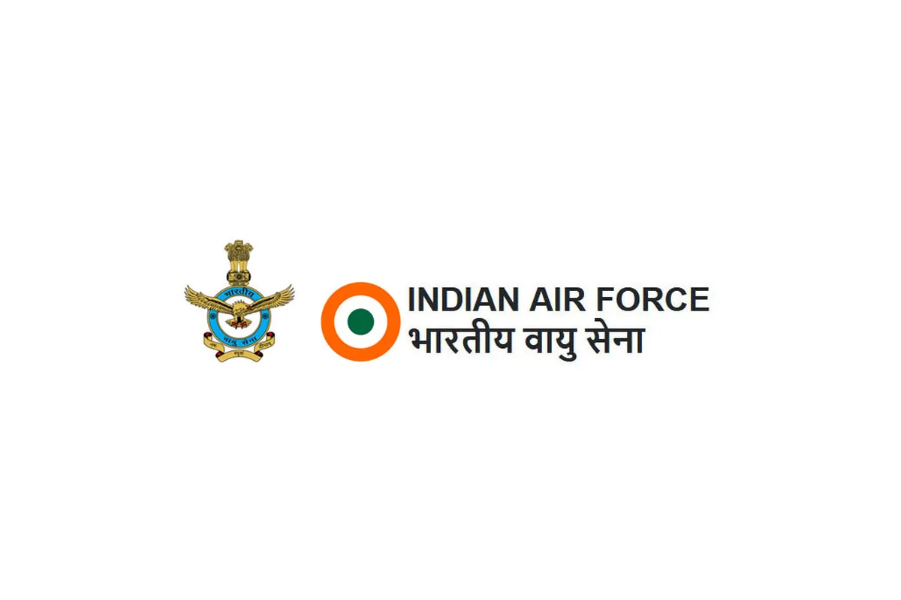

F13 Technologies is hiring an AWS Cloud Intern through its official LinkedIn posting. The role is open to undergraduate students and recent graduates in Computer Science, Information Technology or Computer Engineering, and it is a 3-month, work-from-home internship open across India.
The posting is clear that this is an unpaid internship. If you want real exposure to EC2, S3, RDS and Lambda, mentoring from senior engineers and a project to show on your resume, it can be a useful starter. If you need a stipend, read the details below before applying.
Applications go through LinkedIn Easy Apply. The posting does not show a last date, so apply soon.
Table of Contents
- Quick Highlights
- About F13 Technologies
- Role Overview: What You Will Do
- Eligibility Criteria
- Stipend and Perks
- Selection Process
- How to Apply
- Preparation Plan
- Likely Interview Topics
- Common Mistakes to Avoid
- Official Links and Final Checklist
- Final Takeaway
- Also Read
- FAQs
Quick Highlights
| Particular | Details |
|---|---|
| Company | F13 Technologies (IT Services and IT Consulting) |
| Role | AWS Cloud Intern |
| Eligibility | Undergraduate students or recent graduates in CS, IT or Computer Engineering |
| Duration | 3 months |
| Mode | Work from home, India (Remote) |
| Stipend | Unpaid |
| Last date | Not disclosed in the posting |
| How to apply | LinkedIn Easy Apply (see Official Links section below) |
About F13 Technologies
F13 Technologies is listed on LinkedIn under IT Services and IT Consulting. The internship is built around AWS cloud work, so you will be placed with an engineering team that handles cloud migration, cost optimisation and cloud-native application work.
The posting does not give company size or client names, so we have not added any. Before applying, open the company's LinkedIn page and check its employees, posts and activity. That is a sensible step for any unpaid role.
Role Overview: What You Will Do
The posting lists these responsibilities for the Cloud Intern:
- Assist the technical team in documenting cloud migrations, including environment specifications and process flows.
- Support cost optimisation by analysing current usage and suggesting improvements across AWS services.
- Help create network diagrams and system architecture documentation.
- Take part in developing and deploying cloud-native applications using services like EC2, S3, RDS and Lambda.
- Support configuration and troubleshooting of AWS-based environments under senior engineers.
- Collaborate on a capstone group project presented to the leadership team.
- Contribute to team discussions, tech documentation and intern-level knowledge-sharing sessions.
The work mixes documentation, analysis and hands-on deployment. Documentation and architecture diagrams are skills many freshers skip, yet cloud teams rely on them heavily.
Eligibility Criteria
- Currently pursuing, or recently completed, a degree in a technical field such as Computer Science, Information Technology or Computer Engineering.
- Working knowledge of networking fundamentals, Linux/Unix systems and cloud computing concepts.
- Eagerness to learn, take ownership and adapt quickly in a dynamic technical environment.
The posting names no minimum percentage and no specific graduation year. It also asks for no prior experience. Hands-on AWS practice will still help you stand out.
Stipend and Perks
Unpaid internship
The posting states: "This is an unpaid internship." There is no stipend. Apply only if the learning and experience are worth it to you.
The posting lists these perks:
- Work on live AWS projects that reflect real-world use cases.
- Guided mentorship and support throughout the internship.
- Access to training workshops, 6 accreditations and curated learning resources.
- Chances to network with peers, engineers and professionals across the organisation.
- A flexible schedule to fit academic commitments, where applicable.
- Opportunity to take project ownership and, where applicable, step into lead roles within intern teams.
The posting does not say whether a certificate or a full-time offer follows. Ask about this if you reach the interview stage, and do not assume a job offer.
Selection Process
The posting does not describe the selection process. For Easy Apply internships the usual path is profile screening, then a short call or interview. We cannot confirm the exact rounds, so treat the following as preparation advice, not as facts about this hiring.
Expect questions on the topics the posting names: networking basics, Linux commands, and the core AWS services. Keep your LinkedIn profile and resume consistent, because Easy Apply sends your profile details directly to the recruiter.
How to Apply
- Log in to LinkedIn and make sure your profile is complete, with education, skills and projects.
- Open the official posting using the link in the Official Links section below.
- Click Easy Apply.
- Upload a one-page resume that highlights AWS, Linux and networking work.
- Answer the screening questions honestly and submit.
- Keep an eye on LinkedIn messages and your email for replies.
Apply early
The posting was published about two days before this article, and no closing date is given. LinkedIn postings can close without notice once enough applications arrive.

Preparation Plan
You can cover the basics in two to three weeks if you study steadily. Use the AWS Free Tier so you practise on real services and not just theory.
| Area | What to practise |
|---|---|
| Networking | IP addressing, subnets, DNS, HTTP/HTTPS, firewalls, VPC concepts |
| Linux | File permissions, SSH, package management, basic shell scripting, logs |
| AWS core | Launch an EC2 instance, create an S3 bucket, set up RDS, write a simple Lambda function |
| Security basics | IAM users, roles and policies, security groups |
| Cost | Billing dashboard, Cost Explorer, right-sizing and cleaning up unused resources |
| Documentation | Draw an architecture diagram of a small project and write a short README |
A mini project works well on a resume. For example, host a static site on S3, add a Lambda-backed form and store its data in RDS or DynamoDB. Then document it with a diagram.
Likely Interview Topics
- What are EC2, S3, RDS and Lambda, and when would you use each?
- Explain a VPC, public vs private subnets and security groups.
- Basic Linux commands for checking processes, disk usage and logs.
- How would you reduce an AWS bill for an under-used environment?
- What does a cloud migration involve, and what should be documented?
- Tell us about a project where you took ownership.
Show, don't tell
Add a GitHub link or a diagram to your resume. Evidence of hands-on practice carries more weight than a list of service names.
Common Mistakes to Avoid
- Applying without reading that the role is unpaid and then dropping out midway.
- Listing AWS skills you cannot explain in an interview.
- Sending a generic resume that does not mention Linux, networking or cloud projects.
- Ignoring the 3-month commitment alongside college exams. The schedule is described as flexible, but confirm the expected hours.
- Paying anyone for this opportunity. The official posting asks for no fee. Never pay money to anyone claiming to arrange a placement.
Official Links and Final Checklist
Before you apply, check these:
- You are a student or recent graduate in CS, IT or Computer Engineering.
- You accept that the internship is unpaid and lasts 3 months.
- Your resume shows Linux, networking and AWS practice.
- Your LinkedIn profile is complete and up to date.
Final Takeaway
This is a remote, beginner-friendly AWS internship with mentoring, live projects and a capstone presentation. The catch is that it is unpaid. Use the official link in the Official Links section above to apply through LinkedIn Easy Apply, and apply soon since no closing date is stated.
Good for building AWS experience and a resume project, but it pays no stipend, so apply with open eyes.
Also Read

ISRO SAC Graduate, Technician and Trade Apprentice Recruitment 2026: Apply Online by 2 December
Read now →
IOCL Pipelines Division Apprentice Recruitment 2026: 500 Seats for Diploma, Graduate and 12th Pass
Read now →
Google Hiring Associate Product Manager (University Graduate, 2027 Start) in Bengaluru: Apply by Nov 24, 2026
Read now →
IAF AFCAT 01/2027 Recruitment: Flying, Ground Duty Technical and Non-Technical Officers, Apply Online by 11 December 2026
Read now →Browse all latest jobs & updates →
FAQs
1. Is the F13 Technologies AWS Cloud Intern role paid?
No. The official LinkedIn posting states that this is an unpaid internship.
2. How long is the internship?
The internship lasts 3 months and is a work-from-home role.
3. Who can apply?
Undergraduate students and recent graduates in technical fields such as Computer Science, IT or Computer Engineering.
4. Is prior experience required?
No prior work experience is mentioned. Working knowledge of networking fundamentals, Linux/Unix and cloud concepts is expected.
5. How do I apply?
Apply through LinkedIn Easy Apply on the official posting linked in the Official Links section.
6. What will interns work on?
Cloud migration documentation, AWS cost optimisation, architecture diagrams, deploying apps on EC2, S3, RDS and Lambda, and a capstone group project.
7. What is the last date to apply?
The posting does not mention a last date, so apply as early as possible.
8. Can I do this internship alongside college?
The posting mentions a flexible schedule to accommodate academic commitments, where applicable.